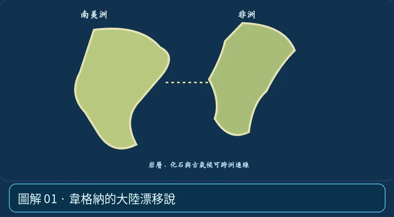

第 04 單元｜圖解 1/6｜課本 p.77–80
韋格納的大陸漂移說
他觀察非洲與南美洲海岸線可拼合，並提出化石、相似岩層、古氣候與冰川痕跡等證據；當時缺乏可信的驅動機制，因此未立刻成為共識。
① 看一眼② 操作圖③ 自己推理④ 揭開解答
🔬 這張圖，請自己動手試
操作圖上方的頁籤、滑桿或按鈕；圖片也能左右滑動放大觀看。
互動圖解 · 韋格納的大陸漂移說

原創 SVG 地科教學模型，方便理解，非真實比例、非即時地震資料；互動無法載入時仍有靜態圖。
STEP 01 · 先觀察
👀 眼睛先找線索
看看兩塊大陸外形是否像拼圖，接著想想：除了形狀，還能蒐集哪些相同的岩層或化石？
💡 為什麼是這樣？
韋格納從海岸線、化石、岩層、古冰川與古氣候整理出大陸曾相連的證據，但當時無法令人信服地提出移動機制。
🎯 換個問法想一題
大陸漂移說從一開始就因為有完整動力機制而被全面接受嗎？
我想好了，點開看答案 ↓
不是。缺乏可信機制是早期的重要質疑。
⚡ 一句記住：一個勇敢的假設